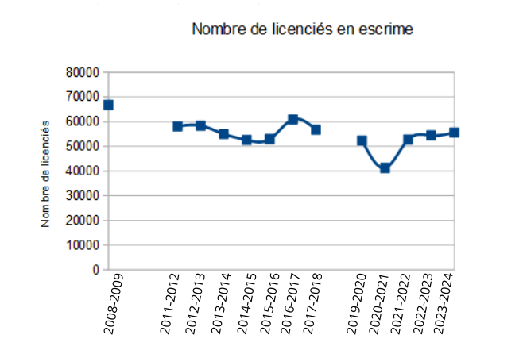
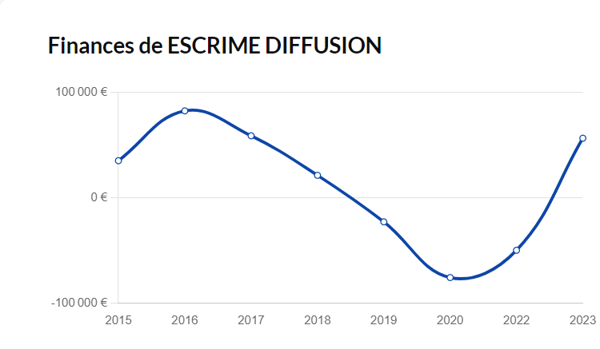
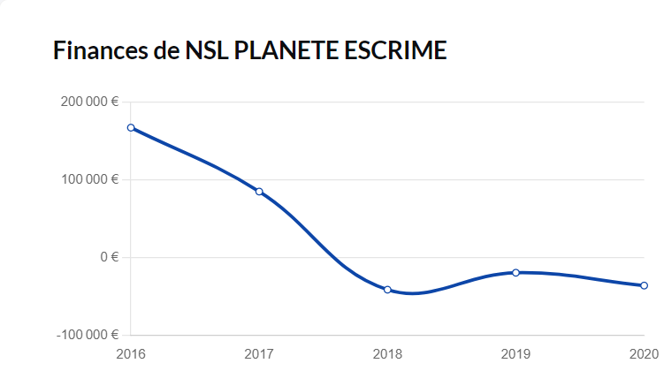
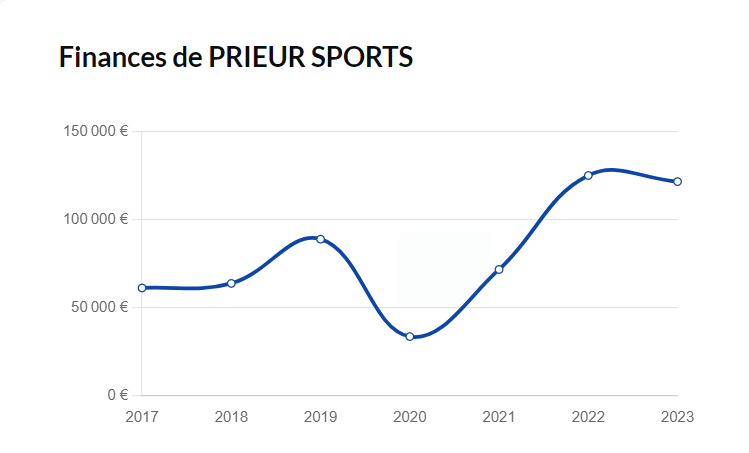

L’escrime est une discipline sportive historique en France, reconnue pour son élégance et sa technicité. Avec des racines remontant à plusieurs siècles, elle continue d’attirer un large public, notamment grâce à ses valeurs de respect et de dépassement de soi. Cette analyse vise à mieux comprendre la dynamique du marché de l’escrime en France, en examinant l’évolution du nombre de pratiquants et les performances des principales entreprises du secteur.
Évolution du nombre de licenciés Le nombre de licenciés d’escrime en France a varié au fil des années, avec une tendance générale oscillant entre 50 000 et 60 000 pratiquants par saison. Voici quelques chiffres clés :
- Saison 2008/2009 : 66 808 licenciés, le pic le plus élevé sur les 15 dernières années.
- Saison 2020/2021 : 41 248 licenciés, un chiffre historiquement bas en raison de la crise sanitaire liée au COVID-19.
- Saison 2023/2024 : 55 600 licenciés, marquant une nette reprise après la baisse due à la pandémie.

Cette évolution met en avant la résilience du marché de l’escrime en France. Après une période difficile durant la pandémie, la reprise est bien engagée, ce qui montre un regain d’intérêt pour ce sport.
Impact de la crise sanitaire La saison 2020/2021 a été marquée par une baisse de 24 % du nombre de licenciés, une conséquence directe des restrictions sanitaires. Cette chute a affecté non seulement les clubs d’escrime, mais aussi les entreprises du secteur, qui ont vu leur activité réduite. Cependant, la reprise rapide du nombre de licenciés après la crise indique une forte capacité d’adaptation des acteurs du marché.
Analyse Concurrentielle
Le marché de l’escrime en France comprend plusieurs entreprises qui jouent un rôle essentiel dans la fourniture d’équipements. Voici une présentation des trois principales entreprises :

La société a connu une forte reprise depuis 2020, avec un taux de croissance du chiffre d’affaires de +12,9 % en 2023 par rapport à l’année précédente.

NSL PLANÈTE ESCRIME a été particulièrement touchée par la crise sanitaire, avec une baisse de 29,4 % de son chiffre d’affaires en 2020. L’entreprise devra mettre en place des stratégies de redressement pour rester compétitive.

Chiffre d’affaires 2023 : Les chiffres précis ne sont pas entièrement disponibles, mais l’entreprise a montré une solide capacité de résilience, avec une trésorerie en augmentation constante depuis 2020.
PRIEUR SPORTS est reconnue pour sa gestion financière prudente et sa capacité à maintenir une bonne autonomie financière.
Tendances et Opportunités
Reprise de la pratique de l’escrime La nette reprise du nombre de licenciés depuis la crise sanitaire reflète un intérêt renouvelé pour ce sport. Les clubs d’escrime jouent un rôle crucial dans cette dynamique en proposant des activités variées et accessibles à tous les âges.
Innovation dans les équipements Avec l’évolution des technologies, il existe des opportunités pour développer de nouveaux équipements d’escrime plus légers et plus performants. Les entreprises du secteur peuvent se positionner sur ces innovations pour attirer davantage de pratiquants.
Développement à l’international Bien que le marché national soit solide, les entreprises françaises peuvent aussi explorer des opportunités à l’étranger, notamment dans les pays où l’escrime gagne en popularité.
L’escrime en France est un marché dynamique, porté par une riche histoire et une communauté de pratiquants fidèles. Malgré les difficultés rencontrées lors de la crise sanitaire, le secteur montre des signes de reprise encourageants. Les entreprises, en misant sur l’innovation et l’expansion, peuvent saisir de nombreuses opportunités de croissance dans les années à venir. Avec un intérêt croissant pour ce sport et une base de pratiquants en augmentation, l’avenir de l’escrime en France semble prometteur.
.